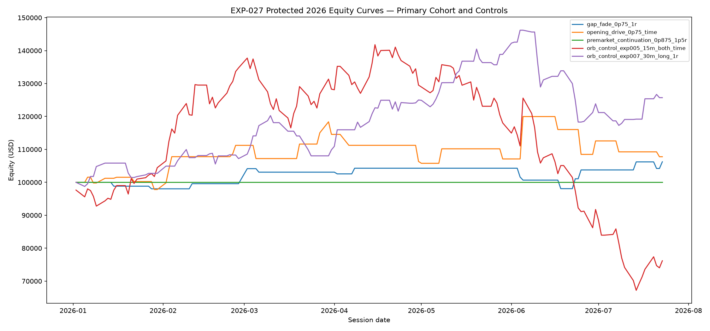
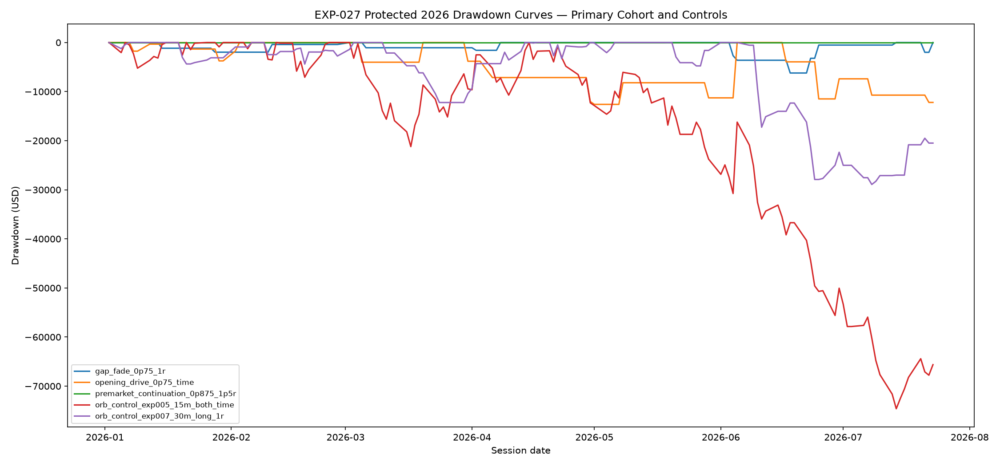

EXP-027 Protected 2026 Multi-Strategy Measurement
Protected period: 2026-01-01 through 2026-07-23. All 22 fixed strategy variants and two fixed controls are reported.
No candidate selection, parameter optimisation, secondary-candidate promotion, winner declaration, paper trading or live trading is authorised.
All / Long / Short measurements
| candidate_id | cohort | completed_trades | net_profit_usd | trade_profit_factor | win_rate | maximum_drawdown_usd | net_profit_to_drawdown |
|---|---|---|---|---|---|---|---|
| gap_fade_0p25_prior_close | SECONDARY_MEASUREMENT_CONTEXT | 48 | -11,580.000 | 0.780 | 35.417 | -24,490.000 | -0.473 |
| gap_fade_0p25_1r | SECONDARY_MEASUREMENT_CONTEXT | 48 | -4,055.000 | 0.908 | 43.750 | -16,090.000 | -0.252 |
| gap_fade_0p50_prior_close | SECONDARY_MEASUREMENT_CONTEXT | 31 | 3,470.000 | 1.109 | 35.484 | -13,440.000 | 0.258 |
| gap_fade_0p50_1r | SECONDARY_MEASUREMENT_CONTEXT | 31 | 5,080.000 | 1.210 | 45.161 | -9,340.000 | 0.544 |
| gap_fade_0p75_prior_close | SECONDARY_MEASUREMENT_CONTEXT | 15 | 580.000 | 1.030 | 26.667 | -9,245.000 | 0.063 |
| gap_fade_0p75_1r | PRIMARY_CONFIRMATION_COHORT | 15 | 6,240.000 | 1.530 | 46.667 | -6,215.000 | 1.004 |
| premarket_continuation_0p50_time | SECONDARY_MEASUREMENT_CONTEXT | 25 | -4,080.000 | 0.841 | 28.000 | -20,640.000 | -0.198 |
| premarket_continuation_0p50_1p5r | SECONDARY_MEASUREMENT_CONTEXT | 25 | -9,537.500 | 0.629 | 28.000 | -19,522.500 | -0.489 |
| premarket_continuation_0p625_time | SECONDARY_MEASUREMENT_CONTEXT | 18 | -6,435.000 | 0.675 | 22.222 | -17,600.000 | -0.366 |
| premarket_continuation_0p625_1p5r | SECONDARY_MEASUREMENT_CONTEXT | 18 | -10,482.500 | 0.470 | 22.222 | -16,227.500 | -0.646 |
| premarket_continuation_0p75_time | SECONDARY_MEASUREMENT_CONTEXT | 9 | -10,860.000 | 0.000 | 0.000 | -10,860.000 | -1.000 |
| premarket_continuation_0p75_1p5r | SECONDARY_MEASUREMENT_CONTEXT | 9 | -10,860.000 | 0.000 | 0.000 | -10,860.000 | -1.000 |
| premarket_continuation_0p875_time | SECONDARY_MEASUREMENT_CONTEXT | 0 | 0.000 | — | — | 0.000 | — |
| premarket_continuation_0p875_1p5r | PRIMARY_CONFIRMATION_COHORT | 0 | 0.000 | — | — | 0.000 | — |
| opening_drive_0p25_time | SECONDARY_MEASUREMENT_CONTEXT | 106 | 2,590.000 | 1.017 | 47.170 | -45,395.000 | 0.057 |
| opening_drive_0p25_1p5r | SECONDARY_MEASUREMENT_CONTEXT | 106 | 9,127.500 | 1.060 | 50.943 | -45,697.500 | 0.200 |
| opening_drive_0p50_time | SECONDARY_MEASUREMENT_CONTEXT | 69 | -6,505.000 | 0.940 | 47.826 | -43,730.000 | -0.149 |
| opening_drive_0p50_1p5r | SECONDARY_MEASUREMENT_CONTEXT | 69 | 1,782.500 | 1.016 | 50.725 | -46,832.500 | 0.038 |
| opening_drive_0p75_time | PRIMARY_CONFIRMATION_COHORT | 27 | 7,770.000 | 1.187 | 51.852 | -12,605.000 | 0.616 |
| opening_drive_0p75_1p5r | SECONDARY_MEASUREMENT_CONTEXT | 27 | 10,340.000 | 1.249 | 51.852 | -13,712.500 | 0.754 |
| opening_drive_1p00_time | SECONDARY_MEASUREMENT_CONTEXT | 0 | 0.000 | — | — | 0.000 | — |
| opening_drive_1p00_1p5r | SECONDARY_MEASUREMENT_CONTEXT | 0 | 0.000 | — | — | 0.000 | — |
| orb_control_exp005_15m_both_time | FIXED_CONTROL | 139 | -23,820.000 | 0.885 | 45.324 | -74,605.000 | -0.319 |
| orb_control_exp007_30m_long_1r | FIXED_CONTROL | 90 | 25,715.000 | 1.324 | 63.333 | -28,920.000 | 0.889 |
Equity curves

Drawdown curves

Execution integrity
- Independent rebuild: True
- Serial/parallel parity: True
- Databento API calls: 0
- New market-data download: False
- Paper/live trading authorised: False